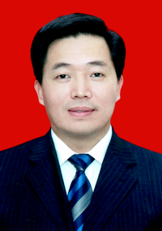

方玮峰简历

方玮峰，男，汉族，1966年6月出生，河南禹州人，1989年8月参加工作，1985年6月加入中国共产党，大学学历，法学学士，现任安康市委副书记，市政府市长、党组书记。
-
1985.09—1989.08 北京大学政治学与行政管理专业学习
-
1989.08—1990.09 中央纪委工作，派往北京市平谷县黄松峪乡、县纪委挂职锻炼
-
1990.09—1994.05 中纪委第六、第九纪检室科员、副主任科员
-
1994.05—1996.06 中纪委干部室、中央国家机关处副主任科员、主任科员
-
1996.06—1997.11 中纪委机关团委书记（副处级）
-
1997.11—2000.07 中纪委办公厅副处级检查员、监察员、领导秘书
-
2000.07—2001.10 中纪委办公厅正处级检查员、监察员
-
2001.10—2003.11 陕西省委办公厅正处级秘书
-
2003.11—2004.03 咸阳市政府市长助理
-
2004.03—2004.04 咸阳市委常委
-
2004.04—2006.11 咸阳市委常委、组织部部长
-
2006.11—2008.02 咸阳市委常委、市政府常务副市长
-
2008.02—2008.03 安康市委副书记，市政府党组书记、代市长
-
2008.03— 安康市委副书记，市政府市长、党组书记
-
省十一届人大代表，咸阳市第五次党代会代表，咸阳市五届人大代表，安康市二届、三届人大代表。
Go back to 首页Update:datetime=2011/08/15 11:10:08